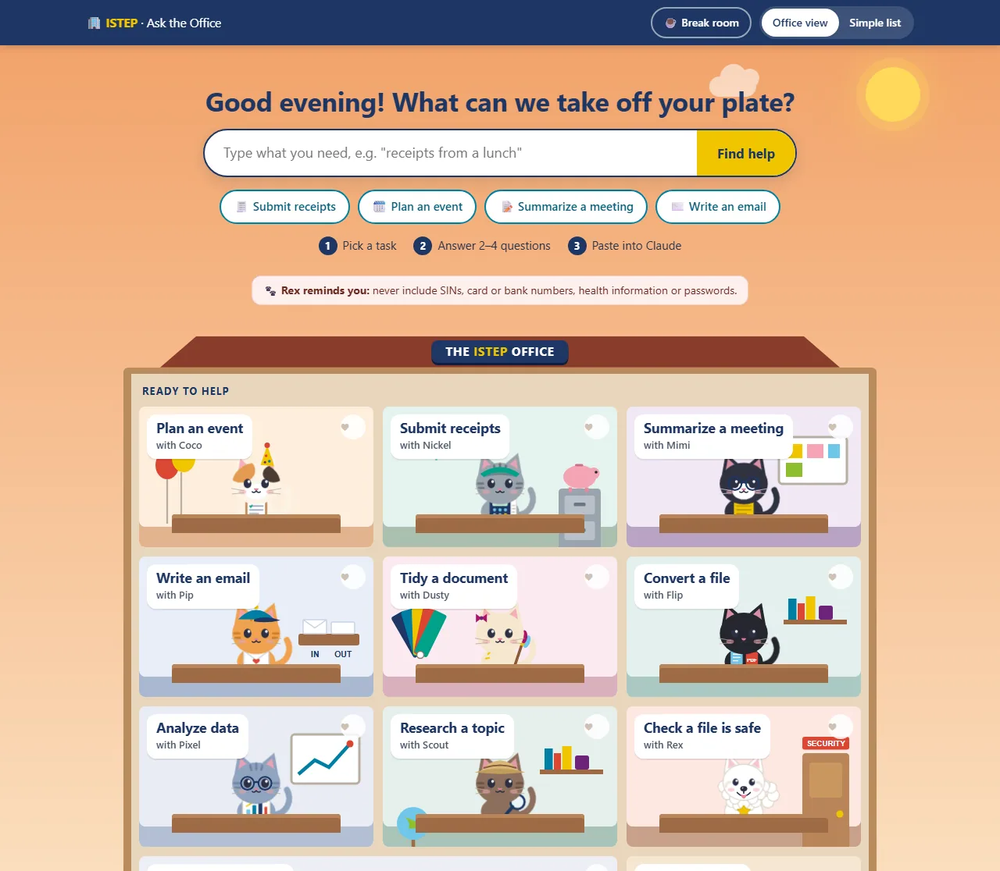
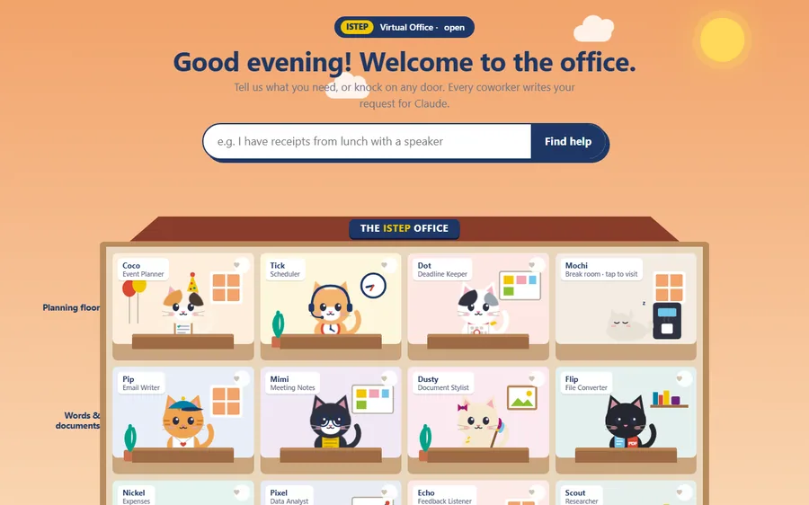

Virtual Office
A Claude plugin of 16 plain-language skills that turns ISTEP's repetitive admin into checked first drafts.


Result
- 16skills, one cartoon coworker each
- 12builds in 39 days
- 21Atlas direction graphics
The team launched on Oct 5 with v0.16.0, and v0.16.9 is built.
The problem
ISTEP's office staff, most of them non-technical, repeat the same work all year: budgets, run-of-show schedules, food labels, expense claims and recaps. A general AI assistant doesn't know ISTEP's vendors, claims route or brand, and staff need guardrails so personal data never goes where it shouldn't.
What I built
A plugin of 16 skills, each one a cartoon coworker. Ask the Office, a friendly web page, walks staff through a request and hands it to Claude. Rex, the data watchdog, runs before every skill that touches data.


Calls I made
- It drafts. You send. Every skill stops at a draft that a person reviews and sends.
- Added a source and date to every reference file. After the first watchdog, built from a summary, missed Level 3.
- Switched unfinished skills off. They wait in a training room, built but out of sight until they're ready.
Full detailsHow it works, the full feature list, decisions, numbers and next steps
Tools
- Claude plugin format (Markdown skills with YAML front matter)
- Python
- HTML, CSS and vanilla JS (Claude artifacts)
- pptxgenjs
- Playwright and headless Edge
- Kokoro TTS
Level 4 never goes in.
The problem
ISTEP's office staff, most of them non-technical, repeat the same work all year:
- event budgets and vendor lookups
- run-of-show schedules
- food labels and nametags
- expense claims
- meeting recaps, emails, formatting and file conversions
A general AI assistant doesn't know ISTEP's vetted vendors, claims route, brand or campus contacts. Staff also need guardrails, so personal data never goes where it shouldn't.
What I built
Virtual Office is a Claude plugin of 16 skills. Staff upload the plugin file in Claude for Education (claude.ai, with SSO sign-in), or an org Owner installs it for everyone. Two rules shape everything: "It drafts. You send." and "Level 4 never goes in."
- 8 skills for launch
- Rex, the always-on data watchdog
- 5 in a "training room": built, but switched off until each one is ready
- 1 private skill for my own marketing work
| Persona | Skill | What it does |
|---|---|---|
| Bob, office manager | bob | The menu of the office. It links Ask the Office first, lists the launch skills, then the training room, and ends with the version number and an offer of install help. |
| Rex, Samoyed and data watchdog | data-watchdog | Runs before every skill that touches data. It classifies files against U of T's Data Classification Standard with a real script (SIN and card checksums, header lists). Level 4 stops the work, with the value masked, and says where the data belongs. Level 3 gets one notice. Levels 1 and 2 pass silently. It never edits the file (an edited copy would be an "unofficial copy") and never reports anyone. |
| Coco, calico in a party hat | event-manager | The biggest skill, with 8 sub-tasks: budget versus actuals; a new budget with a planning checklist; vendor lookup (16 vetted vendors, 3 full menus); day-of schedule with an emergency block; a vendor-list audit (one parallel agent per vendor); a post-event wrap-up; food tent cards; and nametags. Its description uses 1,019 of the 1,024 characters allowed. |
| Nickel, tabby with a visor and calculator | expense-reimbursement-drafter | Reads receipt photos: vendor, date, subtotal, HST and the vendor's HST number, tip and total. It reconciles the sums, flags anything illegible instead of guessing, keeps the original image attached and applies U of T's reimbursement rules with sources and rate dates. It drafts the claim and never sends it. |
| Mimi | meeting-notes-summarizer | A recap in chat plus a Word document: decisions, action items with owner and due date, and open questions. A meeting ledger and pre-meeting briefings are built but held until SharePoint is connected. |
| Pip | email-drafter | Paste-ready emails that pull context from a recap or an event plan, and offer directions graphics for event emails. |
| Dusty | document-formatter | Applies ISTEP's palette and logos, keeps mail-merge fields and checks the content word for word. |
| Flip | file-converter | Word, PDF, PowerPoint, Excel and CSV, and images; OCR; parallel batches. |
| Pixel | data-analyst | From quick answers up to dashboards, decks and workbooks. It merges files with a watchdog check on each one. |
| Web researcher | web-researcher | Sourced answers or reports, researching independent angles in parallel. |
| Training room | Echo, Sunny, Tick, Page, Dot | Surveys, onboarding, room booking, a policy FAQ and deadlines. Built but switched off, each waiting on something real: calendar access, ISTEP's own checklist, loaded policies. |
| Private | ai-seo-content-helper | AI-search content briefs for the FTL micro-credential's marketing, grounded in a sourced fact file. |
Ask the Office: the front door
Staff didn't know how to ask an AI for what they needed. So I built a friendly web page (a Claude artifact) that walks them through it: pick a task, answer 2 to 4 tap-to-answer questions, then copy a ready-made request into Claude, with a checklist of what to attach and what never to attach.
An artifact runs separately from the plugin and has no watchdog. So the page only helps people ask, and hands off to Claude for the real work.
- Ask Bob (robot): a single robot guide with favourites and task tiles.
- The Office Cats: 10 cat coworkers as name badges.
- The ISTEP Office Building: a dollhouse with floors by kind of work, 14 cats plus Rex, a live sky and clock that follow the time of day, and a "what do you need" box that lights up the right room and warns on Level 4 words. It added a break-room virtual pet: Mochi. Two rulings drove this version: "Rex is a Samoyed" and "Mochi never dies, at worst grumpy".
- Ask the Office (live since Oct 5): about 1,670 lines in a single 209 KB file. Rooms are labelled by task ("Plan an event with Coco"). Coworkers still in training sit behind a "Peek inside" strip, each with a reason.
The break room has 11 arcade games: ISTEP Snake, a five-letter word game, Sudoku, Memory, Paw Sweeper (find the hidden mines), Solitaire, Pinball, 2048 Office Edition (merge coworkers from Mochi up to Bob), a flying game through the Convocation Hall pillars, a match-3 and Hangman. There are also 5 Mochi mini-games and an opt-in leaderboard under a nickname, with "remove all my scores" and an off switch. For accessibility, a Simple list mode replaces the building view.
How it works
How a request flows through Virtual Office, step by step:
- Ask the Office: Pick a task, answer 2 to 4 questions, copy the request
- Claude + Virtual Office: The request lands in Claude with the plugin's skills
- Rex checks the data: Level 4: stop, value masked Level 3: one notice Levels 1 to 2: silent
- The skill does the work: Budget, claim, recap, tent cards, nametags
- A checked first draft: Sources and dates; nothing invented
- A person sends it: It drafts. You send.
- A three-outcome safety check is wired into six skills: stop, notify and continue, or stay silent.
- Never send. Three reasons are written into the skills: a person should check numbers read from photos; it's the plugin's promise to staff; and an image can carry instructions aimed at the AI.
- No fabrication. Prices, vendors, ingredients, HST numbers and policies are never invented.
- Every reference file has a source and date line. This came from a lesson: the first watchdog was built from a summary and missed Level 3 entirely. I later copied policy text from U of T's own pages, with retrieval dates.
- Emergency numbers are checked against U of T sources. The first number I was given turned out to be the non-emergency line. Now 911 always comes first.
- Untrusted input is handled properly. Menu items, receipt text and image text are escaped and tested against prompt injection.
- It works where it runs. It falls back to sequential work on claude.ai, which has no parallel agents, and to the Caladea and Carlito fonts in the Linux sandbox.
- A launch gate. Skills that aren't ready for staff are hidden with a single setting, not deleted.
Testing Rex with synthetic data
- A script generates two 12-row test rosters with invented names,
TEST-IDs, example.com addresses and 555 phone numbers, plus decoy 9-digit numbers built to fail the SIN checksum. - The trap: one roster hides a published specimen SIN (one that can never be issued) in an unlabelled
ref_codecolumn. The watchdog has to catch it by checksum, not by the column name. - The scanner never prints a full match, and it matches whole words, so "sin" doesn't fire inside "business".
- Result: caught, with zero false positives.
Nickel and U of T's reimbursement rules
Nickel applies U of T's rules, each with its source and rate date: the submission window (three working weeks; over a year needs a justification; two years or more can't be reimbursed), itemized receipts or the missing-receipt form, business purpose and attendees for hospitality, and the current per diem and mileage rates. The workbook has a separate HST tab for rebates, and claims follow ISTEP's two routes: reimbursement or reconciliation.
Release history
| Version | Date (2026) | What changed |
|---|---|---|
| 0.13 to 0.15.0 | Before Sept 23 | Phase 1 on a personal account with synthetic data. 0.14.1 fixed six skills that halted on ordinary Level 3 work. 0.15.0 moved to Claude for Education on Sept 23. |
| 0.15.1 to 0.15.4 | Sept 23 to Oct 2 | An HST and business-number exception (an HST number had been flagged as a SIN), the claims route, a brand guide, a campus safety and directions file, an emergency block in every day-of schedule, and a first caterer's menu. |
| 0.15.5 and 0.15.6 | Oct 2 | A browser-only install guide, a team handoff package, a no-shrimp catering rule and the version in every filename. |
| 0.16.0 | Oct 5 | Team launch. 8 launch skills plus the watchdog; 5 moved to the training room; a suggested "Charge to" line; an FTL facts file; Ask the Office listed first. |
| 0.16.1 | Oct 6 | A new shared Ask the Office link, and every skill points unsure users to the prompt builder. |
| 0.16.2 to 0.16.4 | Oct 7 | Food tent cards, menu descriptions, halal chicken confirmed, and colour only (no mono version). |
| 0.16.5 and 0.16.6 | Oct 8 | Nametags on 6-up badge sheets, with nametags and labels routed to Coco only. |
| 0.16.7 | Oct 12 to 13 | Nickel applies U of T's reimbursement rules; 21 Atlas direction graphics; SSO install steps; a /bob shortcut; the Patch install video and a staff PDF. The plugin grew from 4.2 MB to 10.8 MB. |
| 0.16.8 | Oct 29 | Three vetted vendors added. |
| 0.16.9 | Nov 9 | A campus caterer added, with its full menu. |
The rollout kit
- Install guides in three generations (Oct 2, Oct 5, Oct 13). The last one is framed as IT ticket #VO-001, hosted by Patch the IT-support cat, with a coworker grid, numbered steps and a troubleshooting table.
- An install video: 2 minutes with Patch.
- A staff training page: 8 self-paced modules (about an hour), a hands-on practice module where you watch the watchdog stop a file, a 6-question scenario quiz and a printable quick-reference card.
- The Team Preview deck: 11 slides built in code with pptxgenjs, rebuilt from its recorded structure after a container reset wiped the original script. The story: the problem; "Claude is the engine, Virtual Office knows ISTEP"; two live demos (a year of budgets, and "says no, then yes" with a planted SIN); the guardrails; next steps.
- An ISTEP one-pager: HTML rendered to a Letter PDF, with a script that checks the content clears the footer. Still a draft.
The Virtual Office launch video
- Concept: the whole video is one IT ticket moving from Open to In progress to Testing to Resolved, hosted by Patch, the IT-support cat.
- Style exploration: 3 style frames and 4 combinations. Three were test-rendered in four rounds before "Glass + Paper" won.
- Directed voice: each line is synthesized in 2 or 3 takes and the most expressive one is picked automatically by pitch-range scoring. Pitch accents, question lilts and scripted pauses are added.
- Audio and picture: lip-sync mouth shapes from loudness and spectrum, about 25 synthesized sound effects and a lo-fi music bed, 9 chapters embedded in the MP4, and captions throughout.
The print pieces (food tent cards and nametags) are on the event operations page.
Key decisions
- The front door only helps people ask. An artifact can't run the watchdog, so Ask the Office writes the request and Claude, with Rex, does the work.
- Drafts, never sends. Every skill stops at a draft a person reviews and sends.
- Added a source and date to every reference file. After the first watchdog missed Level 3, every reference file got a source and a date.
- Switched unfinished skills off. The training room keeps unfinished skills built but out of sight until they're ready.
Results and status
- The team launch was on Oct 5 (v0.16.0). v0.16.9 is built; staff are on earlier versions.
- About 100 nametags have been printed for two real events, and the tent cards have been used at real events too.
- Testing log entries #20 to #34 all passed.
| Skills | 16 |
|---|---|
| Builds | 12 in the folder over 39 days, plus about 4 before |
| Size | 62 files, 10.8 MB, about 23,600 words of skill instructions |
| Vetted vendors | 16 |
| Direction graphics | 21 |
| Coworkers and games | 15 coworkers; 11 arcade games and 5 Mochi mini-games |
| Training | 8 modules, a 4-page guide, a 2-minute video and an 11-slide deck |
What I'd do next
- Move staff onto v0.16.9.
- Switch on the training-room skills as their prerequisites arrive: calendar access, ISTEP's own onboarding checklist and the loaded policies.
- Connect SharePoint, so Mimi's meeting ledger and pre-meeting briefings can go live.
- Settle the approval question, so the early prototypes can be deployed.
- Build the Office Handbook, Ops Almanac and Event Packet pilot on top of it.